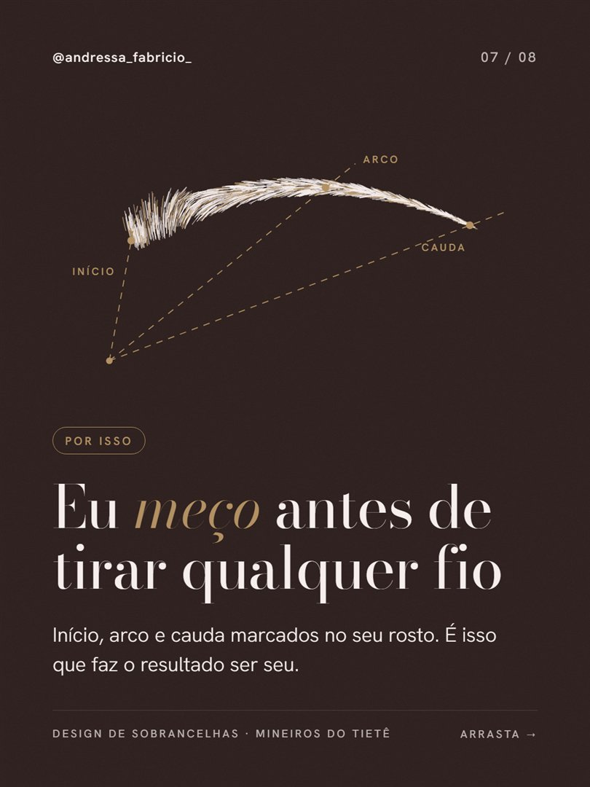
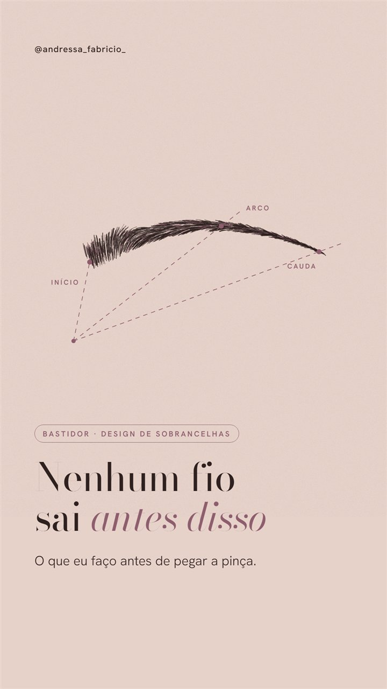
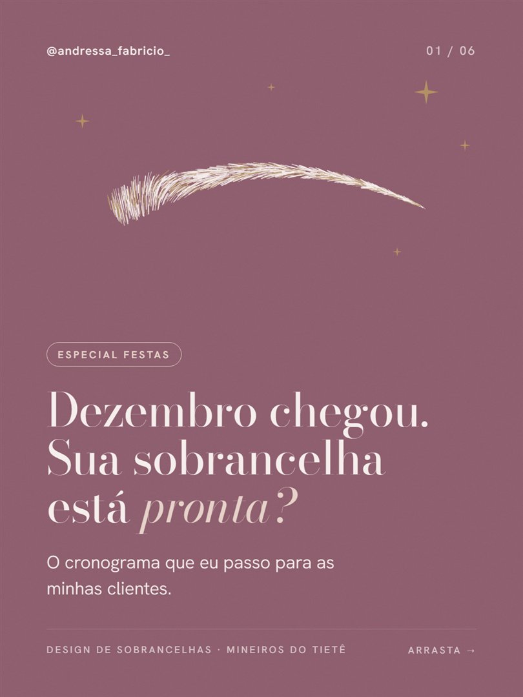
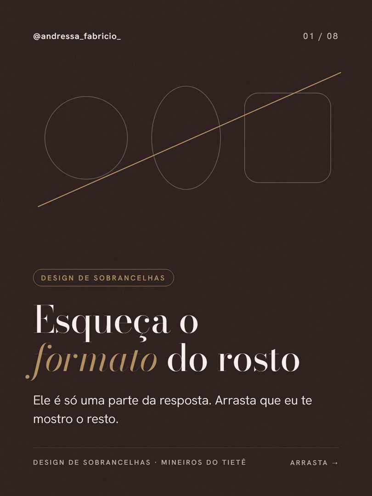
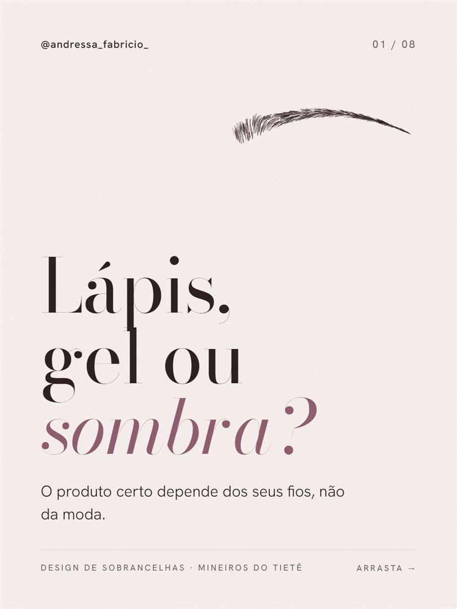
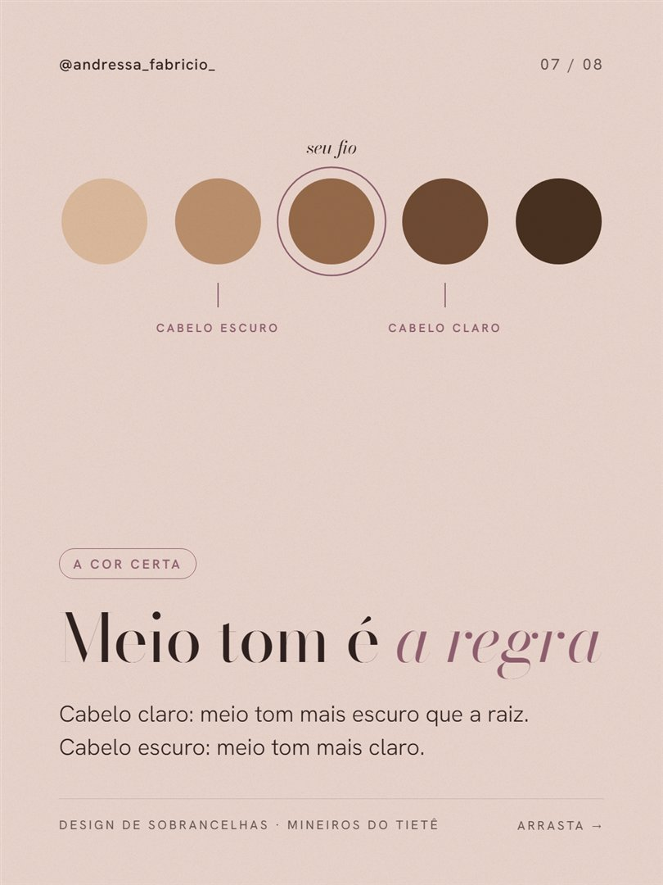
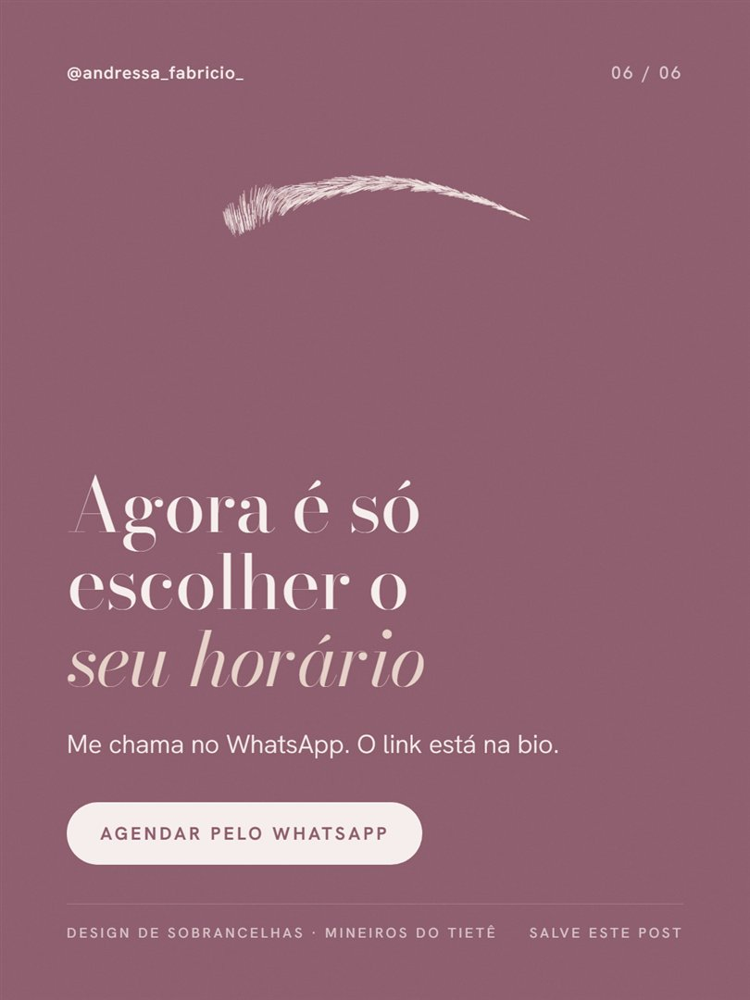

Proposta de conteúdo · @andressa_fabricio_
Estudei o seu Instagram, o jeito como você fala de cuidado e autoestima e o que funciona para quem trabalha com sobrancelha. Antes de qualquer conversa, quis te mostrar na prática como o seu perfil pode ficar.
Preparado por Fabrício, social media · novembro de 2026
O que eu vi no seu perfil
Os destaques Clientes, Feedback e Dúvidas mostram prova real do seu trabalho. Isso é raro em perfil pequeno.
No post de 24 de outubro você acompanhou a evolução de uma cliente desde a primeira sessão. Esse tipo de série prende quem está assistindo.
"Cuidado, autoestima e bem-estar" é uma promessa bonita e muito sua. Ela só precisa aparecer mais nos posts.
Hoje não tem link na bio. Quem gostou do seu trabalho precisa procurar como te chamar.
É o formato que leva o seu perfil para quem ainda não te segue em Mineiros, Jaú, Dois Córregos e região.
Você faz, mas o perfil ainda não mostra. Junto com a sobrancelha, vira um combo de autocuidado.
Com um calendário, o perfil trabalha por você mesmo nas semanas mais cheias de atendimento.
A identidade que eu criei para você

A assinatura visual: uma sobrancelha desenhada fio a fio, com as linhas de mapeamento. É o seu método virando a marca do perfil. Quem rolar o feed reconhece o seu post antes de ler o nome.
Andressa | Sobrancelhas Mineiros do TietêSobrancelha natural e limpeza de pele 🤍 Mapeamento antes de qualquer pinça 📍 Mineiros do Tietê e região






Os números de seguidores são os de hoje. O resto é uma prévia com os posts que já estão prontos e com a bio e os destaques que eu sugiro.
Prontos para postar
Arraste para ver cada card. Os textos falam com a sua cliente, no seu tom, e terminam sempre com um convite para agendar.
Reels com narração
Dois Reels animados, com voz feminina e trilha suave. Dê o play com som.
Mostra o mapeamento que você faz antes de pegar a pinça. A sobrancelha é desenhada fio a fio na tela e as linhas de início, arco e cauda se traçam enquanto a voz explica.
Apresenta a sua limpeza de pele etapa por etapa e termina com o convite para o combo limpeza de pele mais sobrancelha no mesmo dia.
Depois desses, a ideia é gravar Reels com os seus atendimentos reais. Eu levo o roteiro pronto e te ajudo na gravação.
Seu primeiro mês
Semana 1
Semana 2
Semana 3
Semana 4
Os itens marcados em dourado já estão prontos e aparecem neste material.
Como a gente trabalharia junto
Entendo seus serviços, seus horários livres e o que você quer vender mais.
Te mando o calendário com todos os posts, legendas e roteiros.
Nada vai ao ar sem o seu ok. Ajusto o que você quiser.
Eu publico e, no fim do mês, te mostro o que funcionou.
Para começar
O que eu indico
Para crescer
Os valores eu te passo na nossa conversa, de acordo com o pacote que fizer mais sentido para você.